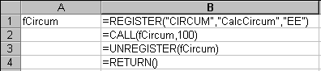

REGISTER (Form 1)
Called from a Microsoft Excel XLM macro sheet or DLL. This
function makes a function or command in a DLL or command available to
Microsoft Excel, and returns the register ID identifying the function
for use by CALL and UNREGISTER.
Returns the register ID of the function (xltypeNum), which can
be used in subsequent CALL and UNREGISTER calls.
Syntax
From a macro sheet:
REGISTER(module_text,procedure,type_text,function_text,
argument_text,macro_type,category,shortcut_text)
From a DLL:
Excel4(xlfRegister, LPXLOPER pxRes, 8,
LPXLOPER pxModuleText, LPXLOPER pxProcedure,
LPXLOPER pxTypeText, LPXLOPER pxFunctionText,
LPXLOPER pxArgumentText, LPXLOPER pxMacroType,
LPXLOPER pxCategory, LPXLOPER pxShortcutText);
module_text (xltypeStr)
The name of the DLL containing the function.
procedure (xltypeStr or xltypeNum)
If a string, the name of the function to call. If a number,
the ordinal export number of the function to call. For clarity and
robustness, always use the string form.
type_text (xltypeStr)
An optional string specifying the types of all the arguments
to the function and the type of the return value of the function. For more
information, see the following "Remarks" section. This argument can be
omitted for a stand-alone DLL (XLL) that includes an xlAutoRegister
function.
function_text (xltypeStr)
The name of the function as it will appear in the Function
Wizard. This argument is optional; if omitted, the function will not be
available in the Function Wizard, and it can be called only using the CALL
function.
argument_text (xltypeStr)
An optional text string describing the arguments to
the function. The user sees this in the Function Wizard. If omitted,
it will be constructed based on the type_text.
macro_type (xltypeNum)
An optional argument indicating the type of function. Use 0
for none, 1 for a function (default), or 2 for a command. This argument
can be used to define hidden functions (use macro_type = 0) or to
define functions available only from macro sheets (use macro_type =
2).
category (xltypeStr or xltypeNum)
An optional argument allowing you to specify which category
the new function or command should belong to. The Function Wizard divides
functions by type (category). You can specify a category name or a
sequential number, where the number is the position in which the category
appears in the Function Wizard. For more information, see "Category Names"
on page 225. If omitted, the User Defined category is assumed.
shortcut_text (xltypeStr)
A one-character, case-sensitive string specifying the control
key that will be assigned to this command. For example, "A" will assign
this command to CONTROL+SHIFT+A. This argument is optional and is used for
commands only.
Remarks
Data Types
In the CALL, REGISTER, and REGISTER.ID functions, the
type_text argument specifies the data type of the return value and
the data types of all arguments to the DLL function or code resource. The
first character of type_text specifies the data type of the return
value. The remaining characters indicate the data types of all the
arguments. For example, a DLL function that returns a floating-point
number and takes an integer and a floating-point number as arguments would
require "BIB" for the type_text argument.
The following table contains a complete list of the data type
codes that Microsoft Excel recognizes, a description of each data type,
how the argument or return value is passed, and a typical declaration for
the data type in the C programming language.
|
Code |
Description |
Pass by |
C declaration |
|
|
|
A |
Logical
(FALSE = 0, TRUE = 1) |
Value |
short int |
|
B |
IEEE 8-byte floating-point number |
Value |
double |
|
C |
Null-terminated string (maximum string length = 255
characters) |
Reference |
char * |
|
D |
Byte-counted string (first byte contains length of
string, maximum string length = 255 characters) |
Reference |
unsigned char * |
|
E |
IEEE 8-byte floating-point number |
Reference |
double * |
|
F |
Null-terminated string (maximum string length = 255
characters) |
Reference (modify in place) |
char * |
|
G |
Byte-counted string (first byte contains length of
string, maximum string length = 255 characters) |
Reference (modify in place) |
unsigned char * |
|
H |
Unsigned 2-byte integer |
Value |
unsigned short int |
|
I |
Signed 2-byte integer |
Value |
short int |
|
J |
Signed 4-byte integer |
Value |
long int |
|
K |
Array |
Reference |
FP * |
|
L |
Logical
(FALSE = 0, TRUE = 1) |
Reference |
short int * |
|
M |
Signed 2-byte integer |
Reference |
short int * |
|
N |
Signed 4-byte integer |
Reference |
long int * |
|
O |
Array |
Reference |
Three arguments are passed:
unsigned short int
*
unsigned short int *
double [] |
|
P |
Microsoft Excel OPER data structure |
Reference |
OPER * |
|
R |
Microsoft Excel XLOPER data structure |
Reference |
XLOPER * |
When working with the data types displayed in the preceding
table, keep the following in mind:
Additional Data Type Information
This section contains detailed information about the E, F, G,
K, O, P, and R data types, and other information about the
type_text argument.
E Data Type
Microsoft Excel expects a DLL using the E data type to pass
pointers to floating-point numbers on the stack. This can cause problems
with some languages (for example, Borland C++) that expect the number to
be passed on the coprocessor emulator stack. The workaround is to pass a
pointer to the number on the coprocessor stack. The following example
shows how to return a double from Borland C++:
typedef double * lpDbl;
extern "C" lpDbl __stdcall AddDbl(double D1,
double D2, WORD npDbl)
{
lpDbl Result;
Result = (lpDbl)MK_FP(_SS, npDbl);
*Result = D1 + D2;
return (Result);
}
F and G Data Types
With the F and G data types, a function can modify a string
buffer that is allocated by Microsoft Excel. If the return value type code
is F or G, then Microsoft Excel ignores the value returned by the
function. Instead, Microsoft Excel searches the list of function
arguments for the first corresponding data type (F or G) and then takes
the current contents of the allocated string buffer as the return value.
Microsoft Excel allocates 256 bytes for the argument, so the function may
return a larger string than it received.
K Data Type
The K data type uses a pointer to a variable-size FP structure.
You should define this structure in the DLL or code resource as
follows:
typedef struct _FP
{
unsigned short int rows;
unsigned short int columns;
double array[1]; /* Actually, array[rows][columns] */
} FP;
The declaration double array[1] allocates storage only for a
single-element array. The number of elements in the actual array equals
the number of rows multiplied by the number of columns.
O Data Type
The O data type can be used only as an argument, not as a
return value. It passes three items: a pointer to the number of rows in an
array, a pointer to the number of columns in an array, and a pointer
to a two-dimensional array of floating-point numbers.
Instead of returning a value, a function can modify an array
passed by the O data type. To do this, you could use ">O" as the
type_text argument. For more information about modifying an array,
see the section "Modifying in Place — Functions Declared as Void"
on page 225.
The O data type was created for direct compatibility with
FORTRAN DLLs, which pass arguments by reference.
P Data Type
The P data type is a pointer to an OPER structure. The OPER
structure contains 8 bytes of data, followed by a 2-byte identifier
that specifies the type of data. With the P data type, a DLL function
or code resource can take and return any Microsoft Excel data type.
The OPER structure is defined as follows:
typedef struct _oper
{
union
{
double num;
unsigned char *str;
unsigned short int bool;
unsigned short int err;
struct
{
struct _oper *lparray;
unsigned short int rows;
unsigned short int columns;
} array;
} val;
unsigned short int type;
} OPER;
The type field contains one of the values listed in the
following table.
|
Type |
Description |
Val field to use |
|
|
|
1 |
Numeric |
num |
|
2 |
String (first byte contains length of
string) |
str |
|
4 |
Boolean (logical) |
bool |
|
16 |
Error: the error values are:
0 #NULL!
7
#DIV/0!
15 #VALUE!
23 #REF!
29 #NAME?
36 #NUM!
42
#N/A |
err |
|
64 |
Array |
array |
|
128 |
Missing argument |
|
|
256 |
Empty cell |
|
The last two values can be used only as arguments, not return
values. The missing argument value (128) is passed when the caller omits
an argument. The empty cell value (256) is passed when the caller passes a
reference to an empty cell.
R Data Type — Calling Microsoft Excel
Functions from DLLs
The R data type is a pointer to an XLOPER structure, which is
an enhanced version of the OPER structure. In Microsoft Excel versions 5.0
and later, you can use the R data type to write DLLs and code resources
that call Microsoft Excel functions. With the XLOPER structure, a DLL
function can pass sheet references and implement flow control, in addition
to passing data. For more information about flow control, see the section
"Advanced Flow Control in Macro Sheets" on page 191.
Volatile Functions and Recalculation
Microsoft Excel usually calculates a DLL function (or a code
resource) only when it is entered into a cell, when one of its precedents
changes, or when the cell is calculated during a macro. On a worksheet,
you can make a DLL function or code resource volatile, which means
that it recalculates every time the worksheet recalculates. To make a
function volatile, add an exclamation point (!) as the last character in
the type_text argument.
For example, in Microsoft Excel for Windows, the following
worksheet formula recalculates every time the worksheet recalculates:
CALL("User","GetTickCount","J!")
Modifying in Place — Functions Declared as
Void
You can use a single digit n for the return type code in
type_text, where n is a number from 1 to 9. This tells
Microsoft Excel to take the value of the variable in the location pointed
to by the nth argument in type_text as the return value.
This is also known as modifying in place. The nth argument must be
a pass-by-reference data type (C, D, E, F, G, K, L, M, N, O, P, or R). The
DLL function or code resource also must be declared with the void keyword
in the C language (or the procedure keyword in the Pascal language).
For example, a DLL function that takes a null-terminated string
and two pointers to integers as arguments can modify the string in place.
Use "1FMM" as the type_text argument, and declare the function as
void.
Previous versions of Microsoft Excel used the > character to
modify the first argument in place — there was no way to modify any
argument other than the first. The > character is equivalent to
n = 1 in Microsoft Excel versions 5.0 and later.
Handling Uncalculated Cells
Appending a number sign (#) to the end of type_text
changes the way the DLL handles uncalculated cells when called from a
worksheet. If the number sign is present, dereferencing uncalculated
cells returns the old values (this is the behavior found in the macro
language). If the number sign is not present, evaluating an uncalculated
cell will result in an xlretUncalced error, and the current function will
be called again once the cell has been calculated. In addition, if the
number sign is not present, the DLL may call only Class 1 functions. If
the number sign is present, the DLL may call any Class 2 function.
For more information about working with uncalculated cells, see the
section "Dealing with Uncalculated Cells" on page 196.
Category Names
Here are some guidelines for determining which category you
should put your XLL functions in (the category argument to
REGISTER).
- If the function does something that could be done by the
user as a part of your add-in's user interface, you should put the
function in the Commands category.
- If the function returns information about the state of
the add-in or any other useful information, you should put the function
in the Information category.
- An add-in should never add functions or commands to the
User Defined category. This category is for the exclusive use of end
users.
Example for a Macro
The following example registers the CalcCircum function in
CIRCUM.DLL, and then calls the function using the defined name
for cell B1.

Example
See the code for the xlAutoOpen function in GENERIC.C in the
FRAMEWRK directory.
Related Functions
CALL, REGISTER.ID, UNREGISTER